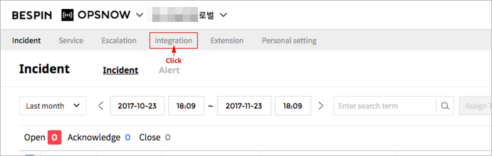

OpsNow
각 서비스들의 상태를 확인할 수 있고 서비스에서 발생한 알람의 장애 현황 및 이력 관리를 할 수 있습니다.
Integration
AWS Cloud Watch에서 발생하는 알람을 OpsNow와 연동하기 위해서는 OpsNow에서 Integration을 설정해야 합니다.
1. OpsNow
사용자가 등록한 서비스 그룹 별로 장애 발생 시 알람을 받을 사용자(Receiver)와 처리할 담당자(Assignee)를 지정합니다.
1.1. 접속
BSP 가입 후, OpsNow 서비스 신청 고객의 경우, 서비스 영역에 아래와 같이 OpsNow Beta 서비스가 노출이 됩니다.
- “OpsNow” 를 선택하여 서비스로 접속 합니다.
1.2. OpsNow 메뉴구성
OpsNow 각 서비스 메뉴 구성은 다음과 같습니다.
| 항목 | 설명 |
|---|---|
| Incident |
Alert 수집 시 Incident Definition Policy에 의해 발급된 티켓의 상태를 관리 합니다. 1) Incident Definition Policy - Service Tagging Rule - Alert Urgency Rule - Alert Suppression Rule Incident Definition Policy는 고객이 설정이 가능 합니다. |
| Service |
고객이 설정한 Service 단위로 Incident를 상태를 관리 합니다. Service는 Integration에서 발생하는 Incident를 관리하기 위한 단위로, 실제로 사용자가 관리하는 서비스나 애플리케이션이 될 수 있고 그 외에도 사용자의 편의에 따라 자유롭게 활용할 수 있습니다. 1) 구성 - Integration Type / Escalation Rule / Alert Rule / Member 구성 필수 요소 : Integration |
| Escalation | Incident 발생 시 단계별로 이를 처리할 담당자 및 담당자가 처리해야 할 Action과 시간(Timeout)을 설정하여 Rule로 관리 합니다. |
| Integration | 3rd Party(외부) 모니터링 툴에서 발생하는 알람을 OpsNow에 연동하기 위해서는 기본적으로 Integration을 설정해야 합니다. Integration 설정 정보를 관리 합니다. |
| Extension | Extension은 OpsNow 내에서 생성된 특정 데이터를 외부 Tool이나 서비스로 Outgoing 할 수 있도록 하는 기능 입니다. |
| Personal Setting | 개인 정보 및 Incident에 대한 Notification Rule에 대한 개인화 기능을 제공 합니다. |
1.3. Integration
사용자는 OpsNow가 제공하는 Integration Templates 목록 중 자신이 사용 중인 툴이나 서비스를 선택하여Integration 설정을 함으로써 해당 툴에서 발생 하는 Alert 을 OpsNow 로 전달 하고 관리할 수 있습니다.
- Integration 메뉴 선택 : Integration 메뉴를 클릭 합니다.

- 신규 Integration 생성 : “Create new Integration” 버튼을 클릭 합니다.
- AWS Cloud Watch 선택 : AWS Cloud watch의 “Add New Integration” 버튼을 선택합니다.
- Integration 설정 : Integration 설정을 위한 입력 항목은 다음과 같습니다.

항목 설명 비고 Integration Name 고객이 Integration Name을 설정할 수 있습니다 필수 입력사항 Integration Type 기 선택한 대상의 로고가 보입니다.

입력 및 수정 불가 사항 Service Service는 여러 Integration을 Group화 하여 고객이 관리하고자 하는 고객 지향의 서비스로 지정하여 Incident를 관리 할 수 있습니다.
- Create Default Service
- 기존 생성/사용 서비스에서 선택
- Add Service Routing Rule필수 선택 사항.
중복 선택 불가.
Default :
Create Default ServiceEscalation Rule - No Escalation
- Single Escalation
- Escalation Routing필수 선택 사항.
중복 선택 불가.
Default :
No EscalationAlert Rule - Add alert suppression rule
- Manually add incident urgency rule옵션 선택사항
중복 선택 가능 - 생성 Integration 저장
가장 기본 생성 방식은 “Integration Name”을 입력 하고, Service를 “Create Default Service” 기본Check 되어진 그대로 “SAVE”를 선택하면 됩니다. - 생성 Integration 정보 확인 : 5단계 수행 후, 아래 화면으로 자동 이동 합니다.
위 정보 중 “URL” 의 경우, AWS Console 상에서 SNS(Simple Notification Service) 에서 OpsNow와 연결하기 위한 SNS Webhook URL 정보로 Copy를 해 두시기 바랍니다.
2. AWS SNS Dashboard
AWS Cloud Watch를 OpsNow에서 생성한 Integration과 연결 시키기 위해서 AWS Console에 접속하여 Topic을 생성하여야 합니다.
2.1 AWS Console 접속
- SNS Dashboard 로 이동 합니다.
2.2 SNS Dashboard 이동
- SNS Dashboard 에서 Create topic을 선택 합니다.
- 1단계. Create New Topic : 항목 입력 후 “Create topic”을 Click 합니다.
입력 항목은 다음과 같습니다. 항목 설명 비고 Topic Name 메시지 전송 및 알림 구독을 위한 커뮤니케이션 채널이며 이후 생성 Topic에 대한 ARN 작성하는데 활용 됩니다.
- Topic Name ARN 예시 :
arn:aws:sns:us-west-2:111122223333:MyTopic입력 필수 항목 Display Name SMS 구독 시, 표현 되어지는 Topic에 대한 Display Name 입니다. 입력 옵션 항목 - 2단계. Create Subscription : “Create Subscription”을 Click 합니다.
다음과 같은 입력 창이 보입니다. 입력 항목은 다음과 같습니다. 항목 설명 비고 Topic ARN 생성한 Topic Name을 기준으로 자동으로 반영 되어 있습니다. 수정 가능 Protocol HTTPS로 선택 합니다.
선택 항목 :
HTTP / HTTPS / Email / Email-JSON / Amazon SQS /
Application / AWS LambdaEndpoint 기존 OpsNow에서 저장해둔 URL을 Paste 합니다. 입력 항목 “Create Subscription”을 선택 합니다.
- 3단계. Subscription
아래와 같은 Subscription이 생성이 됩니다.
오른쪽 상위 Refresh Icon을 Click 합니다. Subscription ID에 대한 승인 확인이 이루어 집니다. 
2.3. EC2 Console 이동
OpsNow로 연결할 Alert을 생성하기 위해 EC2 Console로 이동 합니다.
- 1단계. Add / Edit Alarm 선택
해당 EC2 선택 후, 아래와 같이 Action > CloudWatch Monitoring > Add/Edit Alarm을 선택 합니다.
- 2단계. Create Alarm
“Create Alarm”을 선택 합니다. 입력 항목은 다음과 같습니다. 항목 설명 비고 Send a notification to 생성한 Topic을 찾아서 선택 합니다. 선택 항목 Whenever 해당 임계 치를 설정 합니다. 입력 항목 “Create Alarm”을 생성하면 다음과 같은 메시지가 보입니다.
2.4. OpsNow > Incident
OpsNow 초기 접속 시, “Incident” 화면이 Default로 Display 됩니다.
화면 경로 : Portal - OpsNow- 서비스 처음 접속 초기 화면
처음 접속한 고객의 경우, “No Incidents” 가 보여 집니다. 추후 초기 Setting 절차를 고객이 직접 설정 할 수 있도록 유도하는 Wizard 기능이 제공 될 예정 입니다.
- 서비스 초기 화면
Integration 가이드에 따라 AWS Cloud Watch에 대한 Integration 생성과 AWS Console 상에서 Alarm 설정을 완료 한 경우, 접속과 동시에 Incident를 확인 할 수 있습니다.
Extension
1. OpsNow접속
BSP 가입 후, OpsNow 서비스 신청 고객의 경우, 서비스 영역에 아래와 같이 OpsNow Beta 서비스가 노출이 됩니다.
“OpsNow” 선택하여 서비스로 접속 합니다.
2. OpsNow 메뉴 구성
OpsNow 각 서비스 메뉴 구성은 다음과 같습니다.
| 항목 | 설명 |
|---|---|
| Incident |
Alert 수집 시 Incident Definition Policy에 의해 발급된 티켓의 상태를 관리 합니다. 1) Incident Definition Policy - Service Tagging Rule - Alert Urgency Rule - Alert Suppression Rule Incident Definition Policy는 고객이 설정이 가능 합니다. |
| Service |
고객이 설정한 Service 단위로 Incident를 상태를 관리 합니다. Service는 Integration에서 발생하는 Incident를 관리하기 위한 단위로, 실제로 사용자가 관리하는 서비스나 애플리케이션이 될 수 있고 그 외에도 사용자의 편의에 따라 자유롭게 활용할 수 있습니다. 1) 구성 - Integration Type / Escalation Rule / Alert Rule / Member 구성 필수 요소 : Integration |
| Escalation | Incident 발생 시 단계별로 이를 처리할 담당자 및 담당자가 처리해야 할 Action과 시간(Timeout)을 설정하여 Rule로 관리 합니다. |
| Integration | 3rd Party(외부) 모니터링 툴에서 발생하는 알람을 OpsNow에 연동하기 위해서는 기본적으로 Integration을 설정해야 합니다. Integration 설정 정보를 관리 합니다. |
| Extension | Extension은 OpsNow 내에서 생성된 특정 데이터를 외부 Tool이나 서비스로 Outgoing 할 수 있도록 하는 기능 입니다. |
| Personal Setting | 개인 정보 및 Incident에 대한 Notification Rule에 대한 개인화 기능을 제공 합니다. |
3. Extension
Extension은 OpsNow 내에서 생성된 특정 데이터를 외부 Tool이나 서비스로 Outgoing할 수 있도록 하는 기능 입니다.
현재 Slack을 지원 하고 있으며, Slack에 대한 Extension 설정은 다음과 같습니다.
4. OpsNow Extension slack 설정
- 1단계 : Extension 메뉴 선택
Extension 메뉴를 클릭 합니다.
- 2단계 : Slack Icon 선택
“Set up for Extension” 버튼을 클릭 합니다.
-
3단계 : 새로운 Contact을 생성
“Add new Contact” 버튼을 클릭 합니다.
- 4단계 : Slack을 설정
“Slack” 선택 합니다.
“Create New” 선택하여, Slack 도메인을 생성 합니다.
5. Slack 설정 : Slack 화면으로 이동
Slack에 Sign-In 합니다. Slack에 가입이 안되어 있는 경우, Slack 가입이 우선 되어야 합니다.
- 1단계 : OpsNow에 대한 Slack 승인
아래의 내용을 확인 한 후, “Authorize”를 선택 합니다.
위와 같은 메세지가 나옵니다. "OK"를 선택합니다. - 2단계 : OpsNow에서 확인
OpsNow “Personal Setting” 메뉴에서 Contact method에 생성한 Slack Domain이 추가 된 것을 확인 합니다.
Escalation
1. 접속
BSP 가입 후, OpsNow 서비스 신청 고객의 경우, 서비스 영역에 아래와 같이 OpsNow Beta 서비스가 노출이 됩니다.
“OpsNow” 선택하여 서비스로 접속 합니다.
2. OpsNow 메뉴 구성
OpsNow 각 서비스 메뉴 구성은 다음과 같습니다.
| 항목 | 설명 |
|---|---|
| Incident |
Alert 수집 시 Incident Definition Policy에 의해 발급된 티켓의 상태를 관리 합니다. 1) Incident Definition Policy - Service Tagging Rule - Alert Urgency Rule - Alert Suppression Rule Incident Definition Policy는 고객이 설정이 가능 합니다. |
| ervice |
고객이 설정한 Service 단위로 Incident를 상태를 관리 합니다. Service는 Integration에서 발생하는 Incident를 관리하기 위한 단위로, 실제로 사용자가 관리하는 서비스나 애플리케이션이 될 수 있고 그 외에도 사용자의 편의에 따라 자유롭게 활용할 수 있습니다. 1) 구성 - Integration Type / Escalation Rule / Alert Rule / Member 구성 필수 요소 : Integration |
| Escalation | Incident 발생 시 단계별로 이를 처리할 담당자 및 담당자가 처리해야 할 Action과 시간(Timeout)을 설정하여 Rule로 관리 합니다. |
| Integration | 3rd Party(외부) 모니터링 툴에서 발생하는 알람을 OpsNow에 연동하기 위해서는 기본적으로 Integration을 설정해야 합니다. Integration 설정 정보를 관리 합니다. |
| Extension | Extension은 OpsNow 내에서 생성된 특정 데이터를 외부 Tool이나 서비스로 Outgoing 할 수 있도록 하는 기능 입니다. |
| Personal Setting | 개인 정보 및 Incident에 대한 Notification Rule에 대한 개인화 기능을 제공 합니다. |
3. Escalation
Incident 발생 시 단계별로 이를 처리할 담당자 및 담당자가 처리해야 할 Action과 시간(Timeout)을 설정하여 Rule로 관리 할 수 있습니다.
Escalation Policy 생성을 위한 Use Case는 다음과 같습니다.
| Case | 설명 |
|---|---|
|
Use Case 1) “Escalation” 메뉴에서 생성 |
Escalation 메뉴에서 오른쪽 상위에 있는 “Create New Escalation” 버튼을 Click 합니다. Escalation Policy를 생성 합니다. |
|
Use Case 2) “Integration” 메뉴 상에 Integration Creation시에 생성 |
Integration 메뉴에서 오른쪽 상위에 있는 “Create new integration” 버튼을 Click 합니다. Escalation Rule을 선택 합니다. - No escalation - Single escalation - Escalation routing |
|
Use Case 3) “Integration” 메뉴 상에 기 생성 Integration에서 기 생성 Escalation Rule을 매핑 하는 방안 |
Integration 메뉴에서 왼쪽 기 생성된 Integration 중 Escalation Rule을 매핑 하고자 하는 Integration을 Click 합니다. |
4. Use Case 1: Escalation 메뉴에서 생성
- 1단계 : Escalation 메뉴 선택
Escalation 메뉴를 클릭 합니다.
- 2단계 : 신규 Escalation 생성
“Create new Escalation” 버튼을 클릭 합니다.
- 3단계 : Escalation Policy를 수립
Escalation 설정을 위한 입력 항목은 다음과 같습니다.
항목 설명 비고 Name 고객이 Escalation Policy Name을 설정할 수 있습니다. 필수 입력 사항 Description 해당 Escalation에 대한 설명을 추가 합니다. 옵션 사항 Rule 설정 If the incidents is not “acknowledged / closed” It will escalate to next step.
- Acknowledged 상태가 아닌 경우,
- Closed 상태가 아닌 경우,Escalation Policy를 적용 하도록 설정 합니다.
Rule 설정 Option
- No Escalation
- Single Escalation
- Escalation Routing
Responder
(수신자 설정)같은 회사 소속 User들 중에 선택 할 수 있습니다. 수신자를 여러 명 선택 할 수 있습니다. Policy 선택 시, 필수 설정 사항 Time Noti 를 전달할 Time 주기를 분 단위로 설정 할 수 있습니다. Policy 선택 시, 필수 설정 사항 Action Responder에게 Time 주기로 설정하여 Notification을 한 이후, Action을 “escalation to next step” / “repeat this step” 중 선택 할 수 있습니다.
- escalation to next step : 다음 Escalation 단계로 수행 합니다.
- repeat this step : 현재 단계를 반복 합니다. 반복 주기를 시간 단위로 설정할 수 있습니다Policy 선택 시, 필수 설정 사항 추가 Option 설정 Escalation이 Action 및 추가 Escalation 단계까지 Escalate 됐는데도 아무런 조치가 취해지지 않는 경우, 다음의 옵션을 설정할 수 있습니다.
- Escalation 1단계부터 다시 시작 합니다. 혹은 무한 반복 할 수 있습니다.
- 해당 Escalation에 등록되어 있는 모든 스텝, 모든 담당자들에게 Notification 하도록 설정할 수 있습니다.
- 이 때 해당 Notifications를 (1) 몇 시간 동안 (2) 몇 분 간격으로 반복 실행 할 수 있는지 설정 할 수 있습니다.옵션 설정 항목 - 4단계 : 생성 Escalation 저장
Single Escalation 설정을 아래와 같이 저장 합니다.
-
5단계 : 생성 Escalation 저장
Escalation Routing 설정을 아래와 같이 저장 합니다.
Escalation Routing 추가 옵션 설정 항목은 다음과 같습니다.
항목 설명 비고 옵션 항목 이전 Escalation Rule 설정 시, 포함한 수신자를 포함하여 신규 수신자 추가하여 Rule을 생성할 수 있습니다.
비 활성화 하게 되면, 신규 수신자 추가하여 Rule을 생성 할 수 있습니다.옵션 설정 사항
5. Use Case 2: Integration 생성 시에 생성
Escalation Policy를 설정하는 방법 중 Use Case 2 에 해당하는 사항은 Integration 메뉴에서 Escalation Policy를 생성 하면서 진행 하는 방법 입니다.
- 1단계 : Integration 메뉴 선택
Integration 메뉴를 클릭 합니다.

- 2단계 : 신규 Integration 생성
“Create new Integration” 버튼을 클릭 합니다.
- 3단계 : AWS Cloud Watch 선택
Integration Type의 Icon에 Cursor를 이동하면, “Add New Integration” 버튼이 보입니다.
- 4단계 : Integration 설정
Integration 설정을 위한 입력 항목은 다음과 같습니다.
Service는 여러 Integration을 Group화 하여 고객이 관리하고자 하는 고객 향의 서비스로 지정하여 Incident를 관리 할 수 있습니다.항목 설명 비고 Integration Name 고객이 Integration Name을 설정할 수 있습니다. Integration Type 기 선택한 대상의 로고가 보입니다.
입력 및 수정 불가 사항 Service - Create Default Service
- 기존 생성/사용 서비스에서 선택
- Add Service Routing Rule필수 선택 사항.
중복 선택 불가.
Default : Create Default ServiceEscalation Rule - No Escalation
- Single Escalation
- Escalation Routing필수 선택 사항.
중복 선택 불가.
Default : No EscalationAlert Rule - Add alert suppression rule
- Manually add incident urgency rule옵션 선택 사항.
중복 선택 가능. - 5단계 : Escalation Rule 항목에서 “Single Escalation” 선택
Single Escalation 을 설정 할 경우, 기존 생성한 Escalation Rule이 Drop-Down 형태로 보여 집니다.
해당 항목들 중에 1개의 Escalation Rule을 선택 합니다
만약 적용하고자 하는 Escalation Rule 없다면, Escalation 메뉴로 이동하여 본 가이드의 "1.4 Use Case 1: Escalation” 메뉴에서 새로이 생성 합니다.
- 6단계 : Escalation Rule 항목에서 “Escalation routing” 선택
Escalation routing을 설정 할 경우, 아래와 같은 항목이 보여 집니다.
선택 항목은 다음과 같습니다.
항목 설명 비고 ALERT_SUMMARY Alert 및 Incident의 Title의 내용 옵션 사항 ALERT_METRIC_NAME AWS Cloud-Watch에서 설정한 Metric Name 옵션 사항 ALERT_RESOURCE_ID AWS Cloud-Watch에서 모니터링 설정한 Resource ID 옵션 사항 Sign 필수 사항(선택) To 매치 값을 입력 합니다. route using escalation to 기존 생성한 Escalation Rule중에 선택 합니다. ELSE - Route the Applied : 기존 생성 Escalation Rule 중에 선택 합니다.
- Route the higher-level escalation routing rule : Service 단위의 Escalation Rule로 이동 합니다.
Service 단위의 Escalation Rule이 없을 경우, Escalation Policy는 없게 됩니다.
- Not route the any escalation policy위 각 항목 입력 후, +Add Routing Rule을 Click 합니다.
6. Use Case 3: 생성 된 Integration에 Escalation 매핑
Escalation Policy를 설정하는 방법 중 Use Case 3에 해당하는 사항은 Integration 메뉴에서 기 생성된 Integration 중에 선택하여 Escalation Rule을 매핑 하는 경우 입니다.
- 1단계 : Integration 메뉴 선택
Integration 메뉴를 클릭 합니다.
- 2단계 : Integration 선택
Escalation Rule을 매핑하고자 하는 Integration을 클릭 합니다.
- 3단계 : Escalation Rule 탭을 선택
Escalation Rule을 클릭 합니다.
- 4단계 : Select Type을 선택
선택 항목은 다음과 같습니다.
항목 설명 비고 Select Type - No Escalation
- Single Escalation
- Escalation Routing필수 선택 사항.
중복 선택 불가.
Default : No EscalationDetail 위 Select Type에서 설정한 사항에 따라 상세 설정 내용이 보여 집니다. - 5단계 : Select Type에서 “Single Escalation” 선택
Single Escalation 을 설정 할 경우, 기존 생성한 Escalation Rule이 Drop-Down 형태로 보여 집니다.
해당 항목들 중에 1개의 Escalation Rule을 선택 합니다.만약 적용하고자 하는 Escalation Rule 없다면, Escalation 메뉴로 이동하여 본 가이드의 “1.4 Use Case 1: Escalation” 메뉴에서 새로이 생성 합니다.
- 6단계 : Select Type에서 “Escalation routing” 선택
Escalation routing을 설정 할 경우, 아래와 같은 항목이 보여 집니다.
선택 항목은 다음과 같습니다. 항목 설명 비고 ALERT_SUMMARY Alert 및 Incident의 Title의 내용 옵션 사항 ALERT_METRIC_NAME AWS Cloud-Watch에서 설정한 Metric Name 옵션 사항 ALERT_RESOURCE_ID AWS Cloud-Watch에서 모니터링 설정한 Resource ID 옵션 사항 Sign 필수 사항(선택) To 매치 값을 입력 합니다. route using escalation to 기존 생성한 Escalation Rule중에 선택 합니다. ELSE - Route the Applied : 기존 생성 Escalation Rule 중에 선택 합니다.
- Route the higher-level escalation routing rule : Service 단위의 Escalation Rule로 이동 합니다.
Service 단위의 Escalation Rule이 없을 경우, Escalation Policy는 없게 됩니다.
- Not route the any escalation policy위 각 항목 입력 후, +Add Routing Rule을 Click 합니다.
- 8단계 : 상위에 Apply 버튼 선택
Incident
Incident 메뉴를 통해 각 서비스에서 발생한 Alert들과 incident 들의 목록을 확인할 수 있다. 사용자는 Incident 메뉴를 통해 처리해야 할 문제를 확인하고, 각 문제들의 처리 상태를 기록할 수 있다.
1. 개요
1.1 Alert
CloudWatch, UIM 등 Integration 설정된 Monitoring Tool 이나 서비스에서 발생한 알람을 OpsNow 를 통해 수신 받은 경우, 이를 Alert으로 생성한다.
- Alert 은 Raw Data 이며, 사용자가 임의로 Data를 변경하거나 생성된 Alert 을 삭제할 수 없다.
- Alert 을 통해 Incident를 생성한다. 하지만 모든 Alert 이 Incident를 생성하지 않으며, Alert Rule 에 의해 설정된 Alert 들만이 Incident 를 생성한다.
- Alert 은 사용자에게 Notification을 전달하지 않으며, 해당 Alert 을 통해 Incident 가 생성되어야 사용자에게 Notification 을 전달한다.
사용자는 필요에 따라 서비스 별로 Alert 이 발생하지 않도록 Alert Snooze를 설정할 수 있다.
- 서비스 Deploy 등 필요에 따라 서비스 별로 Alert 이 발생하지 않도록 Alert Snooze를 설정할 수 있다.
- Alert Snooze 상태에서 발생한 Alert 은 Ignore 상태로 저장되며, Alert Snooze 설정으로 인해 해당 Alert 이 ignore 되었음을 Activity History 를 통해 확인할 수 있다.
1.2. Incident
사전에 설정된 Alert Rule 에서 지정된 규칙을 통해 Alert 을 Incident 로 생성할 수 있다. Incident 생성 이후에는 사용자는 incident 에 대한 처리 상황을 기록하거나 Escalation 할 수 있다. 또한 사용자는 사용자의 판단에 따라 Alert 이 생성되지 않은 상태에서도 수동으로 Incident 를 생성해 장애 대응을 진행할 수 있다.
- 사용자는 Alert Rule 에 의해 Incident 가 생성되지 않은 Alert 을 선택해 Incident 로 생성할 수 있다.
- 사용자는 Alert 이 생성되지 않은 상태에서도 수동으로 Incident 를 생성할 수 있다.
- 사용자는 이미 Incident 가 생성된 Alert 을 선택해 다른 Incident 에 연결할 수 있다.
1.3 Alert, Incident 관계
위 내용을 종합했을 때, Alert 과 Incident 는 아래의 관계를 가질 수 있다.
- Alert : Incident = 1 : 1 – Alert 의 상태가 Incident Created 인 경우
- Alert : Incident = 1 : 0 – Alert 의 상태가 Ignore 인 경우
- Alert : Incident = N : 1 – 복수의 Alert 을 하나의 Incident 에 연결한 경우,
- Alert : Incident = 0 : 1 – Alert 없이 수동으로 사용자가 Incident 를 생성한 경우
2. Incident
화면 경로 : Incident - IncidentIncident 메뉴를 통해 생성된 Incident 들을 목록으로 확인할 수 있으며, Incident 별 상세 내용을 확인하고 처리 상태를 기록할 수 있다. 또한 기간, 키워드를 설정해 특정 Incident를 검색할 수 있다.
2.1 화면 구성
Incident 메뉴는 아래와 이미지와 같이 크게 두 영역으로 구분된다.
- Incident List
기 발생한 Incident 들을 목록으로 확인할 수 있으며, 발생한 Incident 들을 검색할 수 있다. Incident List 에서 Incident 선택 시, 선택한 Incident 의 정보가 Incident Detail 영역에 표시된다. Incident List 에서는 아래의 정보를 확인할 수 있다.
항목 설명 No Incident 의 Serial Number 를 표시한다. Title Incident 의 제목을 표시한다. Status Incident 의 상태를 표시한다.
Incident 는 아래의 상태 값을 가진다.
- Opened
- Acknowledged
- ClosedCreated Date Incident 의 생성 날짜 및 시간을 표시한다. Updated Date Incident 의 최종 업데이트 날짜 및 시간을 표시한다. Urgency Incident 의 시급도를 표시한다. Service Incident 가 발생한 서비스 이름을 표시한다. Assignee Incident 의 담당자로 지정된 사용자 이름을 표시한다. - Incident Detail
Incident List 에서 선택한 Incident 의 상세 정보를 확인할 수 있다. 해당 영역은 사용자의 필요에 따라 확장해 큰 화면으로 확인할 수도 있다. Incident Detail에서는 아래의 정보를 확인할 수 있다.
항목 설명 Detail Status Incident 의 상태를 표시한다.
Incident 는 아래의 상태 값을 가진다.
- Opened
- Acknowledged
- ClosedCreated Date Incident의 생성 날짜 및 시간을 표시한다. Urgency Incident의 시급도를 표시한다. Escalation Incident에 설정된 Escalation Rule 을 표시한다. Service Incident가 발생한 서비스 이름을 표시한다. Integration Incident를 발생시킨 Integration 명을 표시한다. Integration Service Incident를 발생시킨 Integration의 Type을 표시한다. Assignee Incident의 담당자를 표시한다. Related Alert Incident에 연결된 Alert 목록을 표시한다. Message Alert 발생 시 첨부된 메시지를 표시한다. Description Incident의 설명을 표시한다. 설명을 직접 입력할 수 있다. Activity History All Incident 의 모든 변경 이력을 Timeline 형식으로 표시한다. Comment Incident 의 Comment 를 Timeline 형식으로 표시하며, 새로운 Comment 를 입력할 수 있다. Assignee Incident 의 Assignee 변경 이력을 Timeline 형식으로 표시한다. Activity Incident 의 상태 변경을 Timeline 형식으로 표시한다.
2.2 Incident 상태
Incident 는 아래의 세가지 상태 값을 가지며, 상태에 따라 Title 영역을 다른 색상으로 표시한다.
- Opened
새롭게 Incident 로 생성되어 아직 처리 전인 상태를 의미한다.
Opened Incident 의 표시 - Acknowledged
장애 사실을 인지하고 담당자가 처리 중인 상태를 의미한다.
Acknowledged Incident 의 표시 - Closed
장애 처리가 완료되어 종결된 상태를 의미한다.
Closed Incident 의 표시
2.3 Incident 검색
사용자는 Incident 목록에서 Incident를 기간/키워드 조건을 설정해 incident를 검색할 수 있다. 검색 결과는 incident 목록에 바로 표시된다.
- 기간 검색
검색 조건 - ① 기간 선택 Preset
사용자가 선택 가능한 기간을 Preset 형태로 제공한다. 사용자는 아래의 기간 Preset 을 선택할 수 있으며, 선택 시 기간 선택 영역에 선택된 기간이 표시된다.
Preset 기간 24 Hours 현재 시간을 기준으로 지난 24시간을 선택한다. Last Week 현재 시간을 기준으로 지난 7일의 기간을 선택한다. Last Month 현재 시간을 기준으로 지난 30일의 기간을 선택한다. Last Year 현재 시간을 기준으로 지난 365일의 기간을 선택한다. Custom 사용자가 직접 기간을 선택한다. - ② 기간 선택
사용자는 검색 시작/종료일 및 시간을 선택할 수 있다. 기간 선택 시 선택한 기간 내의 Incident 가 Incident 목록에 표시된다. 또한 사용자는 좌/우 화살표를 선택해 현재 설정된 날짜를 기준으로 이전/이후 주기를 설정할 수 있다.
- ① 기간 선택 Preset
- 키워드 검색
사용자는 키워드를 입력해 입력한 키워드와 일치하는 Incident를 검색할 수 있다. 선택한 기간의 Incident 중 입력한 키워드와 일치하는 Incident를 검색 결과로 표시한다.
- 상태 필터
상태 필터 목록 내 Incident 중, Assignee가 현재 로그인한 사용자인 Incident 만 필터링해 확인할 수 있다.
- ① Assign to me
Incident 목록에서 Assignee가 현재 로그인한 사용자인 Incident 만 표시한다.
-
② All
전체 Incident를 표시한다.
- ① Assign to me
2.4 Incident 조작
목록 내 Incident 에 대해 아래의 작업들을 수행할 수 있다.
- 상태 변경
Incident 의 상태를 변경할 수 있다. 개별 Incident 의 상태를 변경할 수 있으며, 복수의 Incident 를 선택해 상태를 일괄 변경할 수 있다.
- ① Incident 상태 변경
Incident Detail 화면에서 Title 영역의 [Action] 버튼을 클릭해 상태를 변경할 수 있다.
- - 버튼 클릭 시, 변경 가능한 상태가 표시된다.
- - Opened 상태인 Incident 는 Acknowledged, Closed 상태로 변경할 수 있다.
- - Acknowledged 상태의 Incident 를 Closed 상태로 변경할 수 있다.
- - Closed 상태의 Incident 는 상태를 변경할 수 없다.
- ② 복수 Incident 상태 일괄 변경
Incident List 에서 상태를 변경할 Incident를 선택해 Incident 의 상태를 일괄 변경할 수 있다.

복수 Incident 선택 후, Incident List 상단의 [Action] 버튼을 클릭해 상태를 변경할 수 있다.
- ① Incident 상태 변경
- Assignee 지정 및 변경
Incident별로 Assignee를 지정하거나 변경할 수 있다. Incident Detail 화면의 [Assign] 버튼 클릭 시 Assignee를 지정할 수 있는 팝업이 표시된다.
- ① Assignee를 지정할 Incident 선택
Assignee 항목에는 현재 지정된 Assignee 의 이름이 표시되며, [Assign] 버튼 클릭 시 Assignee를 변경할 수 있는 팝업이 표시된다.
- ② Assignee 선택
Assign User 팝업을 통해 담당자를 검색 후 지정할 수 있다.
하나의 Incident 에 대해 복수의 Assignee를 지정할 수 없다.
- ① Assignee를 지정할 Incident 선택
- 코멘트 작성
Incident에 대한 Comment를 작성할 수 있다.
- ① Active History 탭 선택
Incident Detail 화면에서 Active History 탭을 선택
- ② [Add Comment] 버튼 클릭, Comment 입력 후 [OK] 버튼 클릭
- ③ 입력된 Comment 확인
- ① Active History 탭 선택
- Title 변경
사용자의 필요에 따라 각 Incident 의 Title을 변경할 수 있다.
- ① Title 영역에서 [수정] 버튼 클릭
- ② Title 수정 후, [완료] 버튼 클릭
- ③ 변경된 title 확인
- ① Title 영역에서 [수정] 버튼 클릭
- 연관 Alert 확인
각 Incident 의 연관 Alert 을 확인할 수 있으며, 각 Alert 의 Detail 화면으로 이동할 수 있다.
- ① Incident 연관 Alert 확인
- ② 연관 Alert 클릭해 Alert 상세 정보 확인
- ① Incident 연관 Alert 확인
3. Alert
화면 경로 : Incident - AlertAlert 메뉴를 통해 Alert 들을 목록으로 확인할 수 있으며, Alert의 상세 내용을 확인할 수 있다. 또한 기간, 키워드를 설정해 특정 Alert을 검색할 수 있다.
3.1 화면 구성
Alert 메뉴는 아래와 이미지와 같이 크게 두 영역으로 구분된다.
- Alert list
기 발생한 Alert 들을 목록으로 확인할 수 있으며, 발생한 Alert 들을 검색할 수 있다. Alert List 에서 Alert 선택 시, 선택한 Alert의 정보가 Alert Detail 영역에 표시된다. Alert List 에서는 아래의 정보를 확인할 수 있다.
항목 설명 No Alert 의 Serial Number 를 표시한다. Title Alert 의 제목을 표시한다. Status Alert 의 상태를 표시한다. Created Date Alert 의 생성 날짜 및 시간을 표시한다. Service Alert 이 발생한 서비스명을 표시한다. Integration Type Alert이 발생한 서비스의 Integration Type을 표시한다. - Alert Detail
Alert List 에서 선택한 Alert의 상세 정보를 확인할 수 있다. 해당 영역은 사용자의 필요에 따라 확장해 큰 화면으로 확인할 수도 있다. Alert Detail 에서는 아래의 정보를 확인할 수 있다.
항목 설명 Title Alert 의 Serial Number 를 표시한다. Status Alert 의 제목을 표시한다. Created Date Alert 의 상태를 표시한다. Occurred Date Alert 의 생성 날짜 및 시간을 표시한다. Service Alert 이 발생한 서비스명을 표시한다. Integration Alert 이 Integration 을 표시한다. Integration Type Alert 이 발생한 서비스의 Integration Type을 표시한다. Message Alert 의 상세 메시지를 확인할 수 있다. Description Alert 의 상세 설명을 확인할 수 있다. Related Incident Alert 과 연결된 Incident를 표시한다.
3.2 Alert 검색
사용자는 Alert List에서 기간/키워드 조건을 설정해 Alert을 검색할 수 있다. 검색 결과는 Alert 목록에 바로 표시된다.
- 기간 검색
검색 조건 - ③ 기간 선택 Preset
사용자가 선택 가능한 기간을 Preset 형태로 제공한다. 사용자는 아래의 기간 Preset 을 선택할 수 있으며, 선택 시 기간 선택 영역에 선택된 기간이 표시된다.
Preset 기간 24 Hours 현재 시간을 기준으로 지난 24시간을 선택한��. Last Week 현재 시간을 기준으로 지난 7일의 기간을 선택한다. Last Month 현재 시간을 기준으로 지난 30일의 기간을 선택한다. Last Year 현재 시간을 기준으로 지난 365일의 기간을 선택한다. Custom 사용자가 직접 기간을 선택한다. - ④ 기간 선택
사용자는 검색 시작/종료일 및 시간을 선택할 수 있다. 기간 선택 시 선택한 기간 내의 Alert이 Alert List에 표시된다. 또한 사용자는 좌/우 화살표를 선택해 현재 설정된 날짜를 기준으로 이전/이후 주기를 설정할 수 있다.
- ③ 기간 선택 Preset
- 키워드 검색
사용자는 키워드를 입력해 입력한 키워드와 일치하는 Alert을 검색할 수 있다. 선택한 기간의 Alert 중 입력한 키워드와 일치하는 Incident를 검색 결과로 표시한다.
3.3 Alert 조작
목록 내 Alert 에 대해 아래의 작업을 수행할 수 있다.
- 메시지 확인
발생한 Alert 에 대한 상세 메시지를 확인할 수 있다.
- ① Alert Detail 화면에서 [View] 버튼을 클릭한다.
- ② 새 탭으로 상세 Message가 표시된다.
- ① Alert Detail 화면에서 [View] 버튼을 클릭한다.
- Description 입력
발생한 Alert 에 대해 상세 설명을 입력할 수 있다.
- ① Alert Detail 화면에서 [수정] 버튼을 클릭한다.

- ② Description 입력 후 [저장] 버튼을 클릭한다.
- ③ 입력된 Description 을 확인한다.
- ① Alert Detail 화면에서 [수정] 버튼을 클릭한다.
- 연관 Incident 보기
선택한 Alert을 통해 생성된 Incident 들을 확인할 수 있으며, 각 Incident 의 상세 화면으로 이동할 수 있다.
- ① Alert 연관 Incident 확인
- ② 연관 Incident 클릭해 Incident 상세 정보 확인
- ① Alert 연관 Incident 확인
Service
1. 접속
BSP 가입 후, OpsNow 서비스 신청 고객의 경우, 서비스 영역에 아래와 같이 OpsNow Beta 서비스가 노출이 됩니다.
“OpsNow” 선택하여 서비스로 접속 합니다.
2. OpsNow 메뉴 구성
OpsNow 각 서비스 메뉴 구성은 다음과 같습니다.
| 항목 | 설명 |
|---|---|
| Incident |
Alert 수집 시 Incident Definition Policy에 의해 발급된 티켓의 상태를 관리 합니다. 1) Incident Definition Policy - Service Tagging Rule - Alert Urgency Rule - Alert Suppression Rule Incident Definition Policy는 고객이 설정이 가능 합니다. |
| Service |
고객이 설정한 Service 단위로 Incident를 상태를 관리 합니다. Service는 Integration에서 발생하는 Incident를 관리하기 위한 단위로, 실제로 사용자가 관리하는 서비스나 애플리케이션이 될 수 있고 그 외에도 사용자의 편의에 따라 자유롭게 활용할 수 있습니다. 1) 구성 - Integration Type / Escalation Rule / Alert Rule / Member 구성 필수 요소 : Integration |
| Escalation | Incident 발생 시 단계별로 이를 처리할 담당자 및 담당자가 처리해야 할 Action과 시간(Timeout)을 설정하여 Rule로 관리 합니다. |
| Integration | 3rd Party(외부) 모니터링 툴에서 발생하는 알람을 OpsNow에 연동하기 위해서는 기본적으로 Integration을 설정해야 합니다. Integration 설정 정보를 관리 합니다. |
| Extension | Extension은 OpsNow 내에서 생성된 특정 데이터를 외부 Tool이나 서비스로 Outgoing 할 수 있도록 하는 기능 입니다. |
| Personal Setting | 개인 정보 및 Incident에 대한 Notification Rule에 대한 개인화 기능을 제공 합니다. |
3. Service
고객이 설정한 Service 단위로 Incident를 상태를 관리 합니다.
Service는 Integration에서 발생하는 Incident를 관리하기 위한 단위로, 실제로 사용자가 관리하는 서비스나 애플리케이션이 될 수 있고 그 외에도 사용자의 편의에 따라 자유롭게 활용할 수 있습니다.
구성 요소는 Integration / Escalation / Member 이며, 해당 메뉴에서는 구성 요소에 따른 Incident를 Service 단위로 볼 수 있습니다.
Service 생성을 위한 Use Case는 다음과 같습니다.
| Case | 설명 |
|---|---|
|
Use Case 1) “Service” 메뉴에서 생성 |
Service 메뉴에서 오른쪽 위에 있는 “Create New service” 버튼을 Click 합니다. Service를 생성 합니다. 이 경우, Service Name과 Member 입력 만으로 Service를 생성 할 수 있습니다. |
|
Use Case 2) “Integration” 메뉴 상에 Integration Creation시에 생성 |
Integration 메뉴에서 오른쪽 위에 있는 “Create new service” 버튼을 Click 합니다. Service를 선택 합니다. - Create Default Service - 기 생성 Service 중 선택. - Add service routing rule |
4. Use Case 1: Service 메뉴에서 생성
- 1단계 : Service 메뉴 선택
Service 메뉴를 클릭 합니다.
- 2단계 : 신규 Service 생성
“Create new service” 버튼을 클릭 합니다.
- 3단계 : Service를 생성
Service 생성을 위한 입력 항목은 다음과 같습니다.
항목 설명 비고 Service name 고객이 생성하고자 하는 Service Name을 임의로 입력 합니다. 필수 입력 사항 Member 생성 서비스의 Member를 선택 합니다. 소속 사 내의 구성원 Name이 보여 집니다. Member 선택 없이 Service 생성이 가능 합니다. 옵션 사항 - 4단계 : 생성된 Service를 선택
생성된 Service를 Click 하면 다음과 같은 화면으로 이동 합니다.
각 Tap에 대한 내용은 다음과 같습니다.
항목 설명 비고 Incident 기간 및 Search 조건에 따른 Incident 상태를 확인 할 수 있습니다. Integration 해당 서비스의 Integration 정보를 확인 할 수 있습니다 Eidt 불가 / Delete 가능 Escalation 해당 서비스의 Escalation 정보를 확인 할 수 있습니다. Eidt 불가 / Delete 가능 Member 해당 서비스의 Member를 확인 할 수 있으며, Member를 추가 할 수 있습니다. - 5단계 : 생성된 Service에 Integration 설정
다음 안내 Use Case 2를 참조 하시기 바랍니다.
5. Use Case 2: Integration 생성 시에 생성
사용자는 OpsNow가 제공하는 Integration Templates 목록 중 자신이 사용 중인 툴이나 서비스를 선택하여Integration 설정을 함으로써 해당 툴에서 발생 하는 Alert 을 OpsNow 로 전달 하고 관리할 수 있습니다.
Integration 설정 가이드는 다음과 같습니다.
- 1단계 : Integration 메뉴 선택
Integration 메뉴를 클릭 합니다.
- 2단계 : 신규 Integration 생성
“Create new Integration” 버튼을 클릭 합니다.
- 3단계 : AWS Cloud Watch 선택
Integration Type의 Icon에 Cursor를 이동하면, “Add New Integration” 버튼이 보입니다.

- 4단계 : Integration 설정
Integration 설정을 위한 입력 항목은 다음과 같습니다.
Service는 여러 Integration을 Group화 하여 고객이 관리하고자 하는 고객 향의 서비스로 지정하여 Incident를 관리 할 수 있습니다.항목 설명 비고 Integration Name 고객이 Integration Name을 설정할 수 있습니다. 필수 입력 사항 Integration Type 기 선택한 대상의 로고가 보입니다.
입력 및 수정 불가 사항 Service - Create Default Service
- 기존 생성/사용 서비스에서 선택
- Add Service Routing Rule필수 선택 사항. 중복 선택 불가.
Default : Create Default ServiceEscalation Rule - No Escalation
- Single Escalation
- Escalation Routing필수 선택 사항.
중복 선택 불가.
Default : No EscalationAlert Rule - Add alert suppression rule
- Manually add incident urgency rule옵션 선택 사항.
중복 선택 가능. - 5단계 : Service 항목에서 기 생성 Service를 선택
Service에서 기 생성 Service 중 1개를 선택 합니다.
만약 새로이 Service를 생성하고자 하는 경우, 본 문서의 Use Case 1을 참조 하시기 바랍니다. Save를 선택 합니다.
Escalation Rule을 매핑하고자 하는 경우, Escalation 메뉴의 Help를 참조 하시기 바랍니다.
Personal setting
1. 접속
BSP 가입 후, OpsNow 서비스 신청 고객의 경우, 서비스 영역에 아래와 같이 OpsNow Beta 서비스가 노출이 됩니다. “OpsNow” 선택하여 서비스로 접속 합니다.
2. OpsNow 메뉴 구성
OpsNow 각 서비스 메뉴 구성은 다음과 같습니다.
| 항목 | 설명 |
|---|---|
| Incident |
Alert 수집 시 Incident Definition Policy에 의해 발급된 티켓의 상태를 관리 합니다. 1) Incident Definition Policy - Service Tagging Rule - Alert Urgency Rule - Alert Suppression Rule Incident Definition Policy는 고객이 설정이 가능 합니다. |
| Service |
고객이 설정한 Service 단위로 Incident를 상태를 관리 합니다. Service는 Integration에서 발생하는 Incident를 관리하기 위한 단위로, 실제로 사용자가 관리하는 서비스나 애플리케이션이 될 수 있고 그 외에도 사용자의 편의에 따라 자유롭게 활용할 수 있습니다. 1) 구성 - Integration Type / Escalation Rule / Alert Rule / Member 구성 필수 요소 : Integration |
| Escalation | Incident 발생 시 단계별로 이를 처리할 담당자 및 담당자가 처리해야 할 Action과 시간(Timeout)을 설정하여 Rule로 관리 합니다. |
| Integration | 3rd Party(외부) 모니터링 툴에서 발생하는 알람을 OpsNow에 연동하기 위해서는 기본적으로 Integration을 설정해야 합니다. Integration 설정 정보를 관리 합니다. |
| Extension | Extension은 OpsNow 내에서 생성된 특정 데이터를 외부 Tool이나 서비스로 Outgoing 할 수 있도록 하는 기능 입니다. |
| Personal Setting | 개인 정보 및 Incident에 대한 Notification Rule에 대한 개인화 기능을 제공 합니다. |
3. Personal Setting
개인의 기본 정보(Profile)와 개인이 Notification을 받기 위한 Contact 방법, Notification Rule을 관리하는 서비스 입니다.
Personal Setting 메뉴를 Click 합니다.
Personal Setting 구성은 다음과 같습니다.
| 서비스 Tap 구성 | 설명 |
|---|---|
| Basic Information |
개인 정보로 구성되어 있습니다. - Name - Login email - Time Zone - Service - Escalation |
| Notification rule |
사용자가 Notification을 받는 Case, 조건, 방식을 설정 합니다. 사용자는 Notification Case 및 조건 별로 Rule을 설정해 자신이 원하는 방식으로 Notification을 받을 수 있습니다. - When incident is created : Incident가 생성 된 경우 설정 - When incident is assigned to me : 나에게 Incident가 Assign 되었을 때 (Alert 등급 또는 Incident 등급에 따라) 설정 가능 - When status of my incident is changed : 나에게 Assign된 Incident의 상태가 변경(Acked, Closed 혹은 Reassign)되거나 Escalate 되었을 때 설정 가능 - When status of my incident is escalated : 누군가에 의해 나의 Incident가 Escalation에 등록되었을 때 |
4. Basic Information
개인 Profile과 Contact Method 정보를 Display 및 설정 할 수 있습니다.
- Profile
Profile 구성 정보는 다음과 같습니다.
구분 설명 비고 Name 개인 성명 Login email Login email 정보 Time Zones 개인의 경우, 최초 접속 시 사용 Browser Time으로 설정
- Auto
- 변경 가능설정 가능 Service 개인이 Member이거나 Owner인 Service Display Escalation 개인이 속하거나, 생성한 Escalation Display 위 정보를 다음과 같이 화면에 보여줍니다.
Time Zone의 경우, Setting 할 수 있습니다.
- Contact Method
Service 메뉴를 클릭 합니다.
구분 설명 비고 Email Noti 받기 위한 Email 정보 변경 가능 Mobile Noti 받기 위한 Mobile 정보 변경 가능 Slack Noti 받기 위한 Slack 정보 변경 불가
5. Notification Rule
Notification Rule을 설정하거나 설정된 Notification Rule 들을 확인 할 수 있습니다. 사용자 별로 상황에 따른 알람 발송 여부와 발송 방법을 설정할 수 있습니다.
아래의 상황 별로 알람 발송 여부와 방법을 설정할 수 있습니다.
| 구분 | 설명 | |
|---|---|---|
| When incident is created | Incident가 생성 된 경우 | |
| When incident is assigned to me | 로그인한 사용자에게 Incident가 Assign 된 경우 | |
| When status of my incident is changed | 로그인한 사용자에게 Assign된 Incident의 상태가 변경(Acked, Closed 혹은 Reassign)된 경우 | |
| When status of my incident is escalated | 다른 사용자에 의해 로그인한 사용자에게 Assign된 Incident가 Escalation 된 경우 |
5.1 When Incident is Created
Incident 가 생성된 경우 알람 발송 여부 및 발송 방법을 선택할 수 있습니다.
- [Add New Rule] 버튼을 클릭합니다.
- 알람 발송 방법을 선택합니다.
알람 발송 방법은 Email/Mobile/Extension 된 서비스 중 하나를 선택할 수 있습니다. - 상단의 [Apply] 버튼을 클릭합니다.
5.2 When Incident is assigned to me
로그인한 사용자에게 Incident 가 Assign 된 경우 알람 발송 여부 및 발송 방법을 선택할 수 있습니다. Incident 의 Priority 별 알람 발송 여부 및 방법을 선택할 수 있습니다.
- [Add New Rule] 버튼을 클릭합니다.
- Priority 를 선택합니다. 해당 Priority 의 Incident 생성 시 지정한 방법으로 알람을 받을 수 있습니다.
- 알람 발송 방법을 선택합니다.
알람 발송 방법은 Email/Mobile/Extension 된 서비스 중 하나를 선택할 수 있습니다. - 상단의 [Apply] 버튼을 클릭합니다.
5.3 When status of my Incident is changed
로그인한 사용자에게 Assign 된 Incident 의 상태가 변경된 경우 알람 발송 여부와 발송 방법을 선택할 수 있습니다. 상태 값을 지정해 지정된 상태로 변경된 경우의 알람 발송 여부 및 방법을 선택할 수 있습니다.
Integration Type의 Icon에 Cursor를 이동하면, “Add New Integration” 버튼이 보입니다.


- [Add New Rule] 버튼을 클릭합니다.
- 알람을 받을 상태값을 선택합니다.
- 알람 발송 방법을 선택합니다.
- 상단의 [Apply] 버튼을 클릭합니다.
5.4 When status of Incident is escalated
다른 사용자에 의해 로그인한 사용자에게 Assign된 Incident 가 Escalation 된 경우 알람 발송 여부와 발송 방법을 선택할 수 있습니다.
- [Add New Rule] 버튼을 클릭합니다.

- 알람 발송 방법을 선택합니다.
알람 발송 방법은 Email/Mobile/Extension 된 서비스 중 하나를 선택할 수 있습니다. - 상단의 [Apply] 버튼을 클릭합니다.